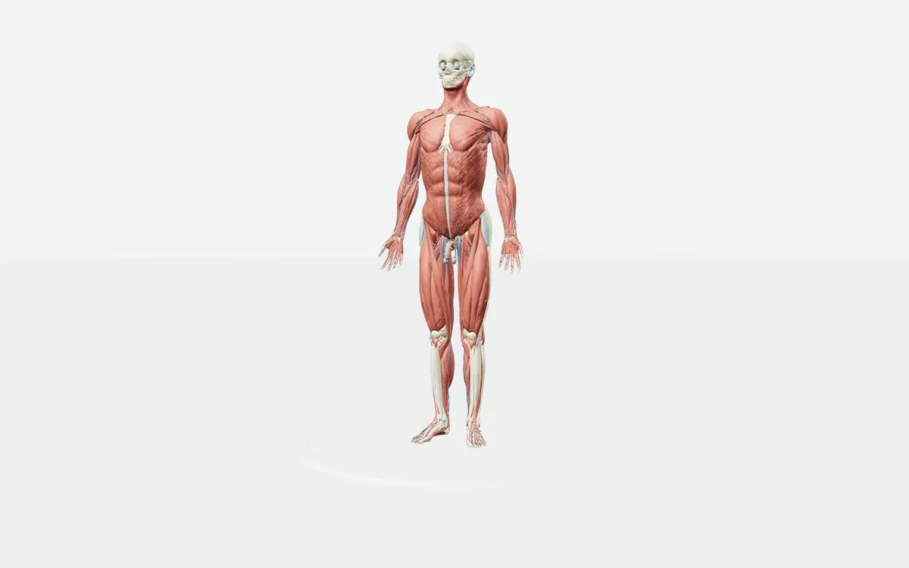

3D & Web2026
3D Anatomy
An open-source anatomy explorer, adapted with a more focused study experience. React, TypeScript and Three.js bring interactive 3D data visualization to the browser; saved structures, system presets and a responsive interface make exploration easier to pick up again.
Languages
- TypeScript
- HTML
- CSS
Frameworks & tools
- React
- Three.js
- WebGL
- Vite
- localStorage
- GitHub Actions
- CI/CD
- GitHub Pages
See it in action
Project preview
A view of the working project. Open the demo to explore it.
The challenge
The original Human Atlas already provides a detailed Three.js and WebGL anatomy viewer: 2,234 meshes, 15 body systems and 3,432 anatomical concepts. My goal was to build on that foundation with small, practical UX improvements that help someone move from browsing the body to studying a few structures.
The idea
A personal study list keeps selected structures close at hand between visits, with localStorage persistence and no account required. Circulation, Breathing and Movement presets select related body systems together. A restrained teal palette, clear button labels and visible interaction states help make the controls easier to follow.
The build
I extended the existing React and TypeScript frontend with persistent state for saved structures and reusable system presets, retaining the Three.js/WebGL renderer and anatomical dataset. The work combines frontend engineering, responsive UI design, accessible controls and interactive 3D visualization. Vite builds the app, while GitHub Actions runs automated validation and CI/CD deployment to GitHub Pages; subpath-safe assets support the hosted demo.
What came out of it
A live educational explorer with a repeatable study workflow: choose a system preset, inspect anatomy and save structures for the next session. Built on ashemag’s Human Atlas, this version adds personal study tools and deployment automation while preserving the original renderer, dataset credits and licenses.
More technical detail in the project repository. Implementation notes ↗